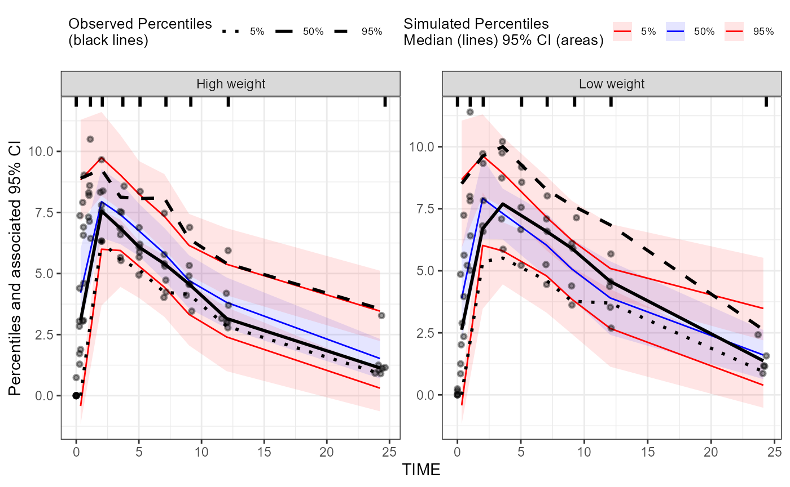
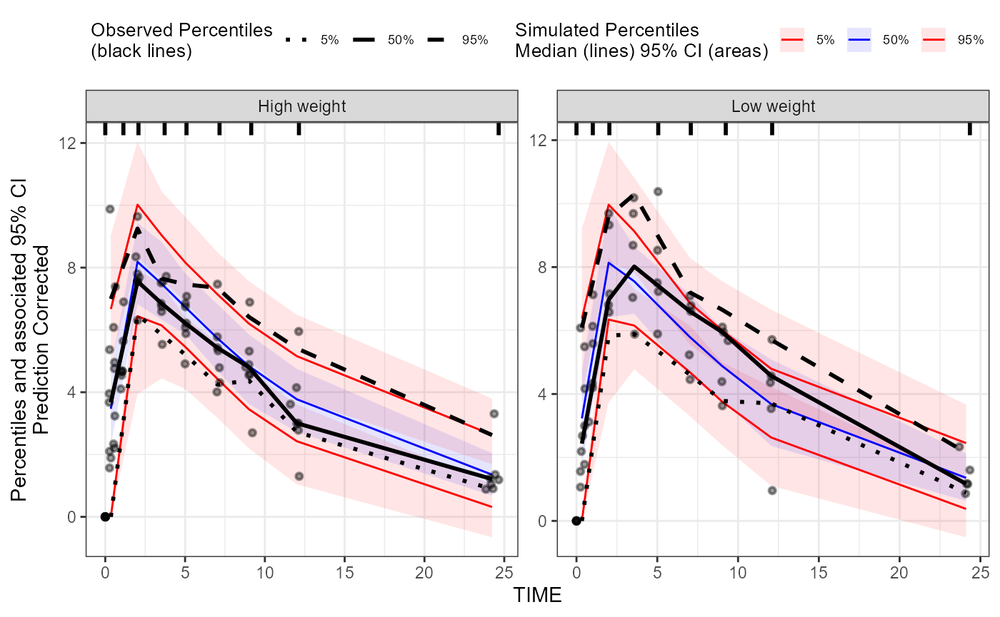

Introduction
tidyvpc and nlmixr2 can work together
seamlessly. The information below will provide step-by-step methods for
using tidyvpc to create visual predictive checks (VPCs) for
nlmixr2 models.
Setup
R setup
First, you must load both libraries.
suppressPackageStartupMessages(library(tidyvpc, quietly = TRUE))
suppressPackageStartupMessages(library(nlmixr2, quietly = TRUE))
library(magrittr)Model fitting
Second, we will fit a simple model to use as an example. For more
information on using nlmixr2 for model fitting, see the nlmixr2 website.
one_compartment <- function() {
ini({
tka <- log(1.57); label("Ka")
tcl <- log(2.72); label("Cl")
tv <- log(31.5); label("V")
eta_ka ~ 0.6
eta_cl ~ 0.3
eta_v ~ 0.1
add_sd <- 0.7
})
# and a model block with the error specification and model specification
model({
ka <- exp(tka + eta_ka)
cl <- exp(tcl + eta_cl)
v <- exp(tv + eta_v)
d/dt(depot) <- -ka * depot
d/dt(center) <- ka * depot - cl / v * center
cp <- center / v
cp ~ add(add_sd)
})
}
data_model <- theo_sd
data_model$WTSTRATA <- ifelse(data_model$WT < median(data_model$WT), "Low weight", "High weight")
fit <- nlmixr2(one_compartment, data_model, est="saem", saemControl(print=0))
#> ℹ parameter labels from comments are typically ignored in non-interactive mode
#> ℹ Need to run with the source intact to parse comments
#> → loading into symengine environment...
#> → pruning branches (`if`/`else`) of saem model...
#> ✔ done
#> → finding duplicate expressions in saem model...
#> [====|====|====|====|====|====|====|====|====|====] 0:00:00
#> → optimizing duplicate expressions in saem model...
#> [====|====|====|====|====|====|====|====|====|====] 0:00:00
#> ✔ done
#> ℹ calculate uninformed etas
#> ℹ done
#> Calculating covariance matrix
#> → loading into symengine environment...
#> → pruning branches (`if`/`else`) of saem model...
#> ✔ done
#> → finding duplicate expressions in saem predOnly model 0...
#> → finding duplicate expressions in saem predOnly model 1...
#> → optimizing duplicate expressions in saem predOnly model 1...
#> → finding duplicate expressions in saem predOnly model 2...
#> ✔ done
#> → Calculating residuals/tables
#> ✔ done
#> → compress origData in nlmixr2 object, save 7912
#> → compress parHistData in nlmixr2 object, save 8216
#> → compress phiM in nlmixr2 object, save 312032VPC preparation
nlmixr2 provides a method for simulating multiple
studies to prepare for a VPC. Use the keep argument to add
columns from the source data to the simulated output (e.g. to use it for
stratification of the VPC).
fit_vpcsim <- vpcSim(object = fit, keep = "WTSTRATA")Following the vpcSim() call, the remainder of the steps
use tidyvpc to generate the vpc.
Generate a standard VPC
The x and y arguments to
observed() are the columns from your original dataset. The
x and y arguments to simulated()
will almost always be time and sim based on
the outut from vpcSim().
obs_data <- data_model[data_model$EVID == 0,]
vpc <-
observed(obs_data, x=TIME, y=DV) %>%
simulated(fit_vpcsim, x=time, y=sim) %>%
stratify(~ WTSTRATA) %>%
binning(bin = "jenks") %>%
vpcstats()
plot(vpc)
Prediction-corrected VPC
For a pred-corrected VPC, you need the population predicted value in
the observed data. That is straight-forward to add with
nlmixr2 by adding the predictions to all rows with
EVID == 0.
# Add PRED to observed data
data_pred <- data_model[data_model$EVID == 0, ]
data_pred$PRED <- fit$PRED
vpc_predcorr <-
observed(data_pred, x=TIME, y=DV) %>%
simulated(fit_vpcsim, x=time, y=sim) %>%
stratify(~ WTSTRATA) %>%
binning(bin = "jenks") %>%
predcorrect(pred=PRED) %>%
vpcstats()
plot(vpc_predcorr)